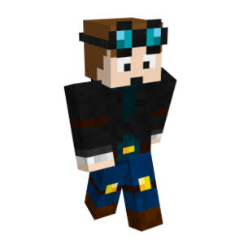

The legends who shaped the Minecraft community on YouTube and Twitch.
DanTDM (Daniel Middleton) is one of the most iconic Minecraft creators of all time. Known for his daily custom mod reviews, hardcore survival series, and family-friendly adventures, he introduced millions of players to the creative possibilities of modded Minecraft throughout the 2010s.

Stampy (Joseph Garrett) created "Stampy's Lovely World," one of the most heartwarming and legendary let's play series in YouTube history. His cheerful commentary and creative builds made his world a welcoming home for younger generations of gamers.
Dream revolutionized modern Minecraft content with his incredibly fast-paced "Minecraft Manhunt" series and high-skill gameplay challenges. His dramatic videos captured global attention and drove a massive resurgence in Minecraft's popularity starting in 2020.